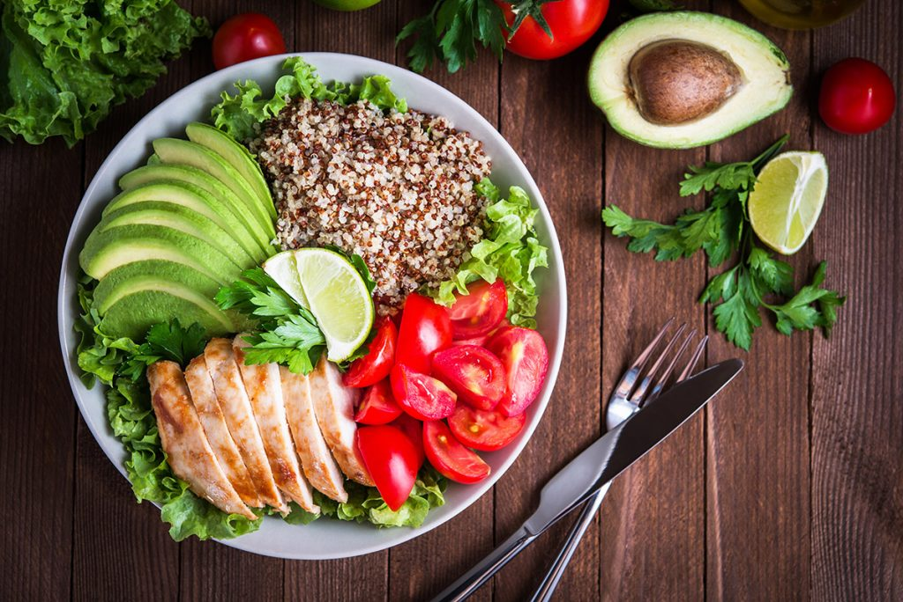

Noche Italiana
Disfruta de una experiencia gastronómica única con música en vivo y menú especial italiano. Incluye pasta artesanal y vino.
15 Marzo 2026
Disfruta de una experiencia gastronómica única con música en vivo y menú especial italiano. Incluye pasta artesanal y vino.
15 Marzo 2026
Una selección exclusiva de platos mediterráneos preparados con productos frescos y locales.
28 Marzo 2026
Cena especial para parejas con decoración temática, menú degustación y postre sorpresa.
14 Febrero 2026
Nuestro chef preparará platos en directo frente a los clientes, explicando técnicas y secretos culinarios. Incluye degustación final.
10 Abril 2026
Disfruta de un brunch especial con buffet libre, zumos naturales y música ambiente para un domingo perfecto.
Cada Domingo